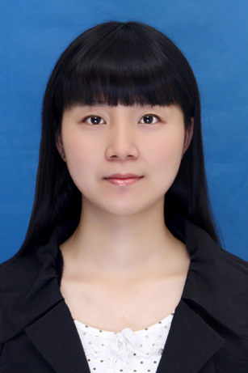
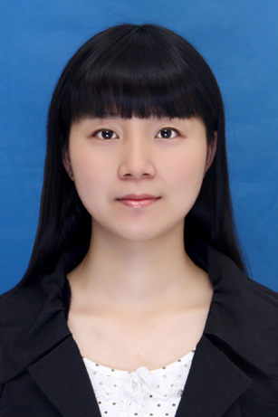
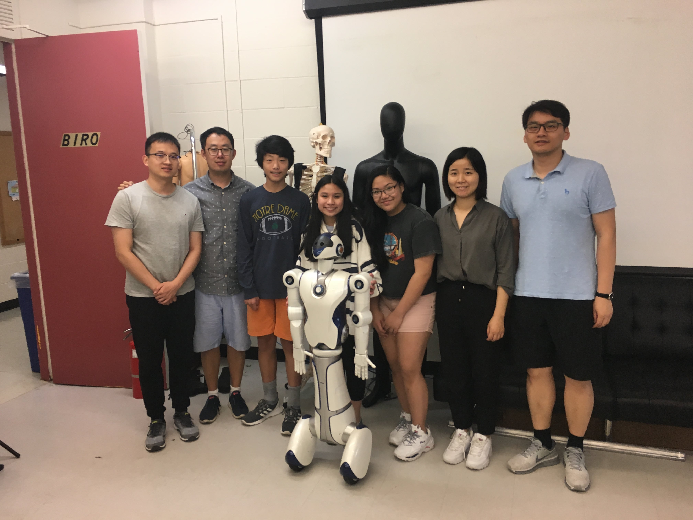

Febraury, 2024
Dr. Sainan (Selena) Zhang, who was a Ph.D. student supervised by Prof. Hao Su, and now a postdoctoral research scholar working in the BIRO lab, proudly announces our paper titled "Actuator Optimization and Deep Learning-Based Control of Pediatric Knee Exoskeleton for Community-Based Mobility Assistance" has been officially published in the respected journal "Mechatronics" (Elsevier)! This collaborative effort explores cutting-edge advancements in optimizing actuators and applying deep learning techniques to control pediatric knee exoskeletons for community-based mobility assistance.
 

November, 2023
Congratulations！Sainan Zhang, a Ph.D. student at the BIRO Lab, has successfully defended her doctoral dissertation. The dissertation defense, titled "Actuator Optimization and Control of Pediatric Knee Exoskeleton for Community-based Mobility Assistance: Lighter, More Affordable, and More Stable," marks a significant milestone in Zhang's academic journey, showcasing her dedication and expertise in the field. Zhang expressed her gratitude to her mentor, Professor Hao Su, for his guidance and support throughout her doctoral studies. The BIRO Lab extends heartfelt congratulations to Zhang on this remarkable accomplishment, wishing her continued success in her future endeavors.
May 23, 2022
Sainan Zhang presented her latest research "Collocated Impedance Control of Proprioceptive Quasi-Direct Drive Actuators: High Fidelity Torque Estimation without A Torque Sensor" at The IEEE International Conference on Robotics and Automation 2022 (ICRA'22) hosted in Philadelphia, Pennsylvania
Workshops

May 23, 2022
Sainan Zhang attended the 27th CAST-USA Annual Convention, whose theme is Advance Science and Technology for the Benefit of Humanity. She was assigned to be a receptionist for Prof. Eric R. Kandel, M.D. who is a member of the United States National Academy of Sciences and the Nobel Prize laureate in Physiology or Medicine.
07/19/2019
PhD students Sainan Zhang and Hang mentored three high school students from CT and NJ.

10/05/2019
百年
08/23/2019
10/05/2019 Dr. Hao Su and lab members attended the Northeast Robotics Colloquium (NERC) 2019 in Philadelphia, PA. We presented 3 posters. 1. Soft Wearable Robots for Injury Prevention and Performance Augmentation 2. Lightweight and Backdrivable Knee Exoskeletons for Injury Prevention and Pediatric Rehabilitation 3. Soft and Strong Actuators for Upper Limb Augmentation
10/05/2019
10/05/2019 Dr. Hao Su and lab members attended the Northeast Robotics Colloquium (NERC) 2019 in Philadelphia, PA. We presented 3 posters. 1. Soft Wearable Robots for Injury Prevention and Performance Augmentation 2. Lightweight and Backdrivable Knee Exoskeletons for Injury Prevention and Pediatric Rehabilitation 3. Soft and Strong Actuators for Upper Limb Augmentation